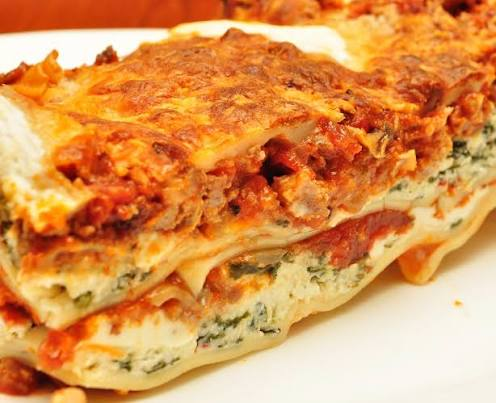

Lasagna

Description:
Classic Italian lasagna is a comforting baked pasta dish made with alternating layers of tender pasta sheets,
rich meat ragu sauce, and creamy bechamel or ricotta cheese.
Baked until bubbly and golden brown on top, it delivers a rich combination of flavors that makes it a beloved family favorite for special meals or weekend dinners.
Ingredients:
- 12 lasagna pasta sheets
- 500g ground beef
- 1 onion (finely diced)
- 2 cloves garlic (minced)
- 800g canned crushed tomatoes
- 2 tbsp tomato paste
- 1 tsp dried oregano
- 1 tsp dried basil
- 2 cups shredded mozzarella cheese
- 1/2 cup grated Parmesan cheese
- 2 tbsp olive oil
- Salt and pepper to taste
Steps:
- Heat olive oil in a skillet, saute onion and garlic until soft, then add ground beef and cook until browned.
- Stir in tomato paste, crushed tomatoes, oregano, basil, salt, and pepper, and simmer the meat sauce on low for 20 minutes.
- Boil the lasagna noodles in salted water according to package directions, then drain and set aside.
- Spread a thin layer of meat sauce on the bottom of a baking dish.
- Lay pasta sheets over the sauce, followed by another layer of meat sauce and a generous sprinkle of mozzarella and Parmesan cheese.
- Repeat the layers of pasta, sauce, and cheese until all ingredients are used, finishing with a thick layer of cheese on top.
- Bake in a preheated oven at 190C (375F) for 30 to 35 minutes until the cheese is melted and bubbling.
Home